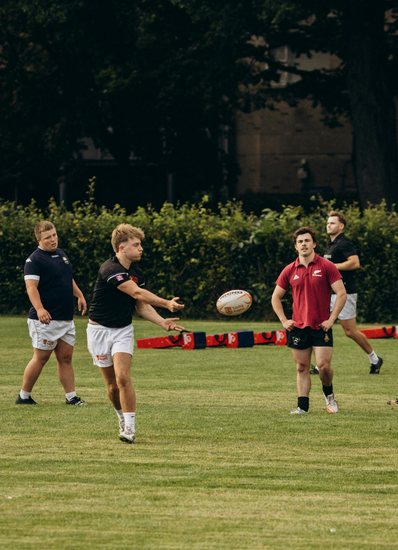

You remember the small things. Sitting on the physio bench before training while the tape goes on, strip by strip, the cold spray, the same conversation with the same physio every week. Then the irritating ten minutes that night picking it all back off your legs, the sticky residue that never quite leaves, the skin underneath red and stinging. Nobody puts that part in the comeback montage. But that was the season, mostly.
Now you have been signed off. The scans are clear. Your quad is measuring within a few percent of the other leg, and everyone around you keeps using the same word. Ready.
Then you stand at the edge of the pitch on a cold Tuesday evening, and your body tells you something completely different.
If you have been in that moment, you already know something that takes sport psychology a long time to explain properly. Being physically ready and feeling ready are two very different things. The space between them is where a lot of good athletes quietly get stuck.
What confidence actually is
In sport psychology, confidence is your belief that you can do the thing in front of you. Bandura (1997) called the task-specific version self-efficacy, meaning your judgement about whether you can execute a particular skill in a particular situation. Vealey (1986) extended this into sport confidence, a broader belief in your ability to succeed in your sport.
Does it matter for performance? Reasonably clearly, yes, though less than you might expect. The most recent and thorough answer comes from Lochbaum and colleagues (2022), who pooled 41 studies of 3,711 athletes across 24 sports and 15 countries. The overall relationship between self-confidence and performance came out at r = 0.25 (95% CI 0.19 to 0.30), with little sign of publication bias. In plain terms, a small effect, roughly six percent of shared variance.
What makes that number hard to wave away is how stubbornly it repeats. Woodman and Hardy (2003) had earlier found r = 0.24, and Craft and colleagues (2003) landed on the same r = 0.24 before that. Three separate meta-analyses, different inclusion criteria, largely different studies, and essentially one answer: confidence is related to performance, and the relationship is small. (For the anxiety half of that same research, see Pressure Is Not the Enemy.)
Two details from the newest review matter for the athletes we tend to work with. The link is about twice as strong in individual sports (r = 0.29) as in team sports (r = 0.14), and about twice as strong when performance is measured objectively, like a time or a score (r = 0.29), as when it is rated by eye (r = 0.14). If you play a team sport, the confidence-performance link in the research is, if anything, even fainter than the headline number suggests.
Worth being honest about what that tells us, though. These are correlations. Confidence travelling alongside strong performance does not prove confidence produced it. Performing well is also a very reliable way to start feeling confident. The arrow points both ways. And the story gets messier than that, which we will come back to.
Confidence, self-esteem and self-concept are not the same thing
Athletes use these three words interchangeably. So do most coaches. They describe genuinely different things.
Your self-concept is descriptive. It is the picture you hold of who you are (Shavelson et al., 1976). I am a midfielder. I am quick over ten metres. I am the one who runs the warm-up.
Your self-esteem is evaluative. It is the judgement you make about your own worth (Rosenberg, 1965). Am I any good? Am I enough?
Your confidence is predictive and specific. It is your read on whether you can do this particular thing, today, in these conditions.
This is why injury hurts more than it seems like it should. It does not politely restrict itself to one of the three. First it takes your confidence in a knee. Then it takes your self-concept, because you are not currently the person who runs the warm-up. Then it goes after your self-esteem, because if you are not that person, what are you actually worth. A hamstring becomes an identity question, which is why “just trust the rehab” lands so badly when someone says it to you.
There is also a wrinkle in the self-esteem story that most of us were never told. Baumeister et al. (2003) reviewed decades of research and concluded that high self-esteem does not reliably cause better performance. Where the two travel together, performing well tends to raise self-esteem more than the reverse. Feeling good about yourself is pleasant. It is not a performance strategy.
Russ Harris (2010) puts the same point more sharply: the story your mind tells about you is a description, not the person. Whether that description is glowing or scathing, it is still just words. What you do matters more than what you believe about yourself.
The trap that keeps athletes waiting
Here is the story we tell ourselves that does the real damage, and almost nobody says it out loud:
The story that does the damage
“I cannot perform properly until I feel confident.”
Harris (2010) calls this the confidence gap, and it is a cruel place to sit, because it makes a feeling the entry requirement for the action. You wait to feel ready before you commit. Meanwhile the only thing that reliably produces the feeling is the action you are postponing.
His answer is a single sentence, and it is worth memorising.
“The actions of confidence come first; the feelings of confidence come later” (Harris, 2010).
The popular alternatives hold up poorly. Wood et al. (2009) found that repeating positive self-statements left people with low self-esteem feeling worse than when they started. Your mind hears the claim and immediately goes looking for evidence against it.
The waiting is also expensive. Ardern et al. (2013) reviewed the psychological factors involved in returning to sport after injury and found that psychological readiness, confidence and fear of reinjury were associated with whether athletes made it back to their previous level. Tissue heals on a timeline. Confidence does not follow it out of courtesy.
The case against confidence
Now for the part most confidence content leaves out. Some researchers think the whole thing is overrated, and they have data.
Start with sex, because this is the finding that should give everyone pause. In the newest review, that overall effect was carried almost entirely by the men. Pooling only all-male samples, confidence and performance correlated at r = 0.35. Pooling only all-female samples, it fell to r = 0.07, with a confidence interval running from below zero to 0.23, meaning it includes the real possibility of no relationship at all (Lochbaum et al., 2022). This is not a lone result. It cleanly replicates the same pattern Woodman and Hardy (2003) reported almost twenty years earlier, and the authors rate their certainty on it as high. Two meta-analyses reaching the same conclusion is a very different thing from one.
The same review also quietly punctured a tidier story people like to tell, that confidence must matter more the higher you climb. When Lochbaum and colleagues tested exactly that, higher-standard athletes (r = 0.22) and lower-standard athletes (r = 0.25) were statistically indistinguishable. The comforting idea that confidence is the thing separating the elite from the rest simply did not survive contact with the pooled data.
Then it gets stranger. Woodman et al. (2010) took 28 expert skippers and quietly knocked their confidence down, using an unfamiliar rope and a competitive setting. The group whose confidence dropped performed better. Their explanation is that a little self-doubt signals that effort is required, so you supply it.
Vancouver et al. (2002) found something similar outside sport. Tracking the same people across repeated attempts at a task, they found that higher belief before one trial often preceded worse performance on the next. Feeling sure of yourself, it turns out, can be an invitation to coast. Bandura and Locke (2003) pushed back hard on those findings, and that argument is still running through the journals.
Now, in fairness, the evidence genuinely cuts both ways, and we would rather show you the argument than win it. Ahammer et al. (2019) analysed 254 international biathlon competitions and found the opposite of the skipping study: for the men, dropping self-confidence by one standard deviation added roughly half a standard deviation of missed shots, real damage in a sport decided by them. For the women, once again, there was no effect. So self-doubt is not a reliable secret weapon any more than confidence is a reliable engine. The honest summary is that the feeling, in either direction, does far less to your performance than the noise in your head insists it does.
So who is right? For you, standing at the edge of that pitch, it barely matters. Notice what every finding on both sides of the fight quietly agrees on: the feeling of confidence is not a prerequisite for performing. Even the researchers who pooled the whole literature end their newest review by raising, in their own words, the possibility “that the central premise of higher confidence leading to better performance is overstated” (Lochbaum et al., 2022). At best the feeling helps a little. At worst it breeds complacency. Either way, waiting for it before you act is the one strategy with no research behind it at all.
Which raises the real question. You do not get to choose whether the feeling shows up, and it turns out you do not need it to. So what do you organise your performance around instead?
What ACT offers instead
Acceptance and Commitment Training starts exactly there. You will not think your way into feeling ready, and you do not have to. What you can change is your relationship with the feeling, so ACT does not try to argue you out of the fear, or talk you into confidence. It works on what the fear is allowed to decide.
Harris (2019) describes it as three movements: be present, open up, do what matters.
For the athlete at the edge of that pitch, it looks like this. You notice the thought that the knee is going to go, and you let it be a thought rather than a weather forecast. You let the tightness in your chest sit there without needing it gone first. Then you decide based on what you are there for, rather than on how you happen to feel.
Harris (2010) is also blunt about the misconception sitting underneath all of this. Confidence has never meant the absence of fear. It means a different relationship with it. Even world-class performers get the fight-or-flight response when something matters. They have simply stopped treating it as a veto.
One honest note on the evidence. Acceptance-based approaches in sport have grown quickly since Gardner and Moore (2007) introduced the mindfulness-acceptance-commitment protocol, and the findings so far are encouraging rather than conclusive. Gross et al. (2018) compared an ACT-based programme with traditional psychological skills training in a trial of 18 collegiate athletes. The ACT group improved on coach-rated performance, but the differences between the two programmes did not reach statistical significance. Promising evidence base, not a settled one. You deserve to hear that from us rather than a sales pitch.
So why do we still spend so much time on this trap with athletes, if the trial evidence is young? Because we see it constantly, and it is expensive. The player easing out of contact until they feel sure again. The returning athlete who keeps deferring the first full session to next week. The teenager who skips trials because they do not feel ready yet, as if ready is a thing that arrives on its own. In our experience this is not the rare case. It is the default pattern, and sport quietly punishes it, because selection, form and fitness all keep moving while you wait.

To be clear, none of this is a just-do-it speech. Just do it is a slogan, and slogans do not hold up well on a cold Tuesday evening. Gritting your teeth and pretending the fear is not there is simply another way of fighting it, which is the very thing ACT moves away from. And if your medical team says your body is not ready, then it is not ready, and no amount of psychology overrides that. What we are questioning is something narrower: whether a feeling should get the final say once the genuine barriers have been cleared. The step can be as small as it needs to be. One full training session rather than a full match. One tackle rather than eighty minutes of them. So we come back to the question ACT always asks, which is not whether a thought is true but whether obeying it works. Has waiting to feel confident actually worked for you? If months of waiting have not produced the feeling, that is not a personal failing. It is information about the strategy.
Five things you can do this week
- Name the story. When your mind runs the familiar line, label it. “Here is the I am finished story.” Naming it puts a little air between you and it.
- Give the feeling sixty seconds. Feet on the floor. Notice where the fear actually sits in your body. Breathe around it rather than into a fight with it. You are not relaxing it away. You are practising carrying it.
- Decide what you are there for. Before each session, write one line. Not a result, a quality. I want to compete with full effort. I want to be a good teammate today. Values describe how you want to behave, not what you want to collect (Harris, 2010).
- Assess the action, not the athlete. Afterwards, ask what worked, what did not, and what you will change. That is a different question from whether you are any good. “I lost focus on the ball and threw poorly” is usable information. “I am a lousy player” is not.
- Trade self-esteem for self-compassion. Mosewich et al. (2013) ran a brief self-compassion programme with self-critical varsity women athletes and found moderate to strong reductions in self-criticism, rumination and concern over mistakes, still holding at follow-up. Being kind to yourself is not softness. It is one of the better supported things you can do after a bad day.
Back to that Tuesday evening
You are standing at the edge of the pitch. Your chest is tight and your mind is running its greatest hits.
None of that needs to change before you step on.
The confidence you are waiting for lives on the other side of the stepping on. It always did. Go and get the first repetition, badly if you need to, and let the feeling catch up in its own time. Months of tape and physio benches earned you that much.
If you are working through a comeback, a slump, or a season where your head is louder than usual, this is exactly the sort of thing we work on with athletes. Have a look at our Approach to see how we do it, head to GROW for more on building skills that hold up under pressure, or get in touch for a kōrero about where you are at.
References
Ahammer, A., Lackner, M., & Voigt, J. (2019). Does confidence enhance performance? Causal evidence from the field. Managerial and Decision Economics, 40, 704–717.
Ardern, C. L., Taylor, N. F., Feller, J. A., & Webster, K. E. (2013). A systematic review of the psychological factors associated with returning to sport following injury. British Journal of Sports Medicine, 47(17), 1120–1126.
Bandura, A. (1997). Self-efficacy: The exercise of control. W. H. Freeman.
Bandura, A., & Locke, E. A. (2003). Negative self-efficacy and goal effects revisited. Journal of Applied Psychology, 88(1), 87–99.
Baumeister, R. F., Campbell, J. D., Krueger, J. I., & Vohs, K. D. (2003). Does high self-esteem cause better performance, interpersonal success, happiness, or healthier lifestyles? Psychological Science in the Public Interest, 4(1), 1–44.
Craft, L. L., Magyar, T. M., Becker, B. J., & Feltz, D. L. (2003). The relationship between the Competitive State Anxiety Inventory-2 and sport performance: A meta-analysis. Journal of Sport and Exercise Psychology, 25(1), 44–65.
Gardner, F. L., & Moore, Z. E. (2007). The psychology of enhancing human performance: The mindfulness-acceptance-commitment (MAC) approach. Springer.
Gross, M., Moore, Z. E., Gardner, F. L., Wolanin, A. T., Pess, R., & Marks, D. R. (2018). An empirical examination comparing the mindfulness-acceptance-commitment approach and psychological skills training for the mental health and sport performance of female student athletes. International Journal of Sport and Exercise Psychology, 16(4), 431–451.
Harris, R. (2010). The confidence gap: From fear to freedom. Penguin Group (Australia).
Harris, R. (2019). ACT made simple: An easy-to-read primer on acceptance and commitment therapy (2nd ed.). New Harbinger.
Lochbaum, M., Sherburn, M., Sisneros, C., Cooper, S., Lane, A. M., & Terry, P. C. (2022). Revisiting the self-confidence and sport performance relationship: A systematic review with meta-analysis. International Journal of Environmental Research and Public Health, 19(11), 6381.
Mosewich, A. D., Crocker, P. R. E., Kowalski, K. C., & DeLongis, A. (2013). Applying self-compassion in sport: An intervention with women athletes. Journal of Sport and Exercise Psychology, 35(5), 514–524.
Rosenberg, M. (1965). Society and the adolescent self-image. Princeton University Press.
Shavelson, R. J., Hubner, J. J., & Stanton, G. C. (1976). Self-concept: Validation of construct interpretations. Review of Educational Research, 46(3), 407–441.
Vancouver, J. B., Thompson, C. M., Tischner, E. C., & Putka, D. J. (2002). Two studies examining the negative effect of self-efficacy on performance. Journal of Applied Psychology, 87(3), 506–516.
Vealey, R. S. (1986). Conceptualization of sport-confidence and competitive orientation: Preliminary investigation and instrument development. Journal of Sport Psychology, 8(3), 221–246.
Wood, J. V., Perunovic, W. Q. E., & Lee, J. W. (2009). Positive self-statements: Power for some, peril for others. Psychological Science, 20(7), 860–866.
Woodman, T., & Hardy, L. (2003). The relative impact of cognitive anxiety and self-confidence upon sport performance: A meta-analysis. Journal of Sports Sciences, 21(6), 443–457.
Woodman, T., Akehurst, S., Hardy, L., & Beattie, S. (2010). Self-confidence and performance: A little self-doubt helps. Psychology of Sport and Exercise, 11(6), 467–470.